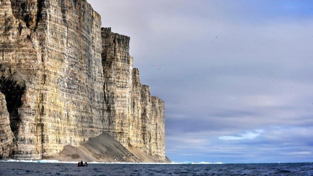
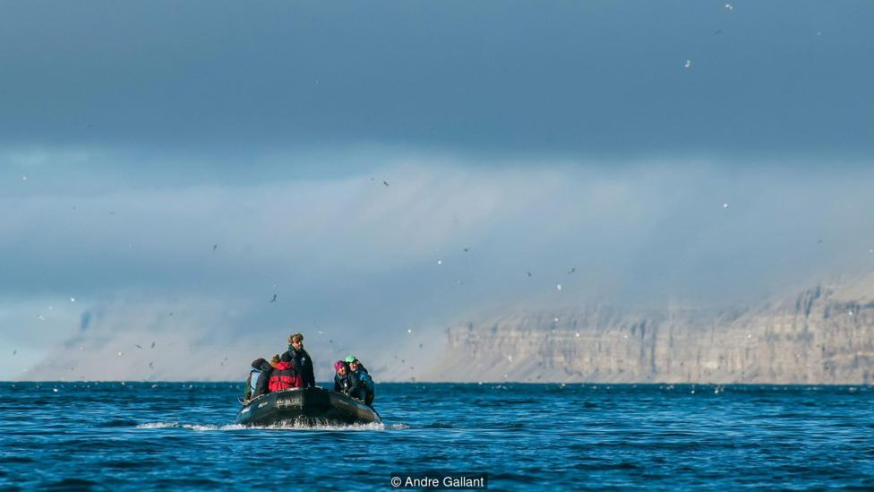
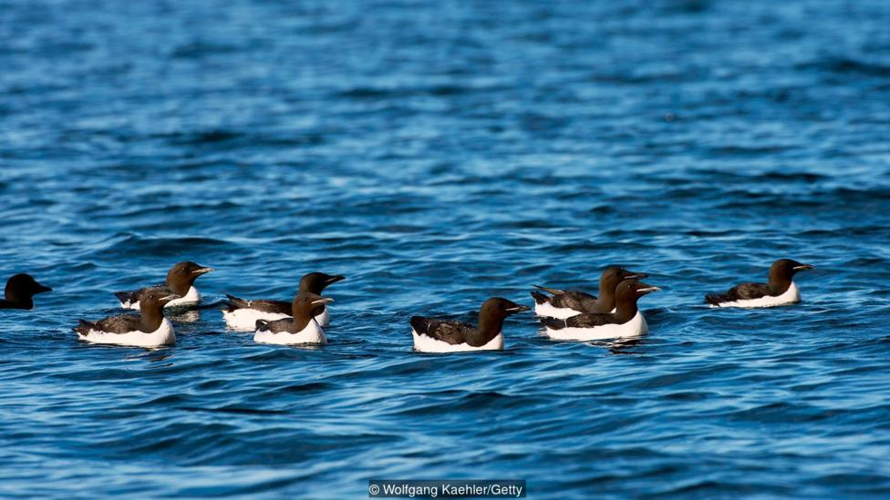
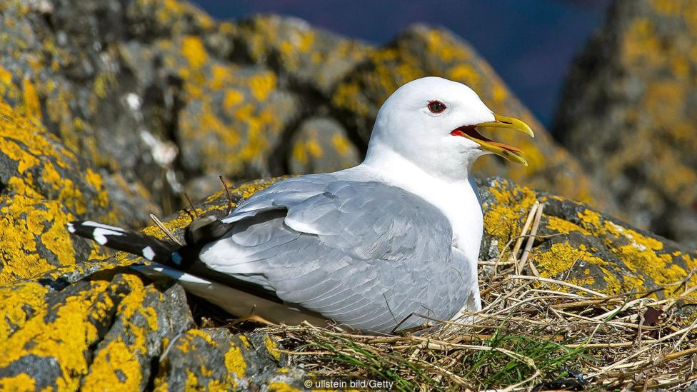
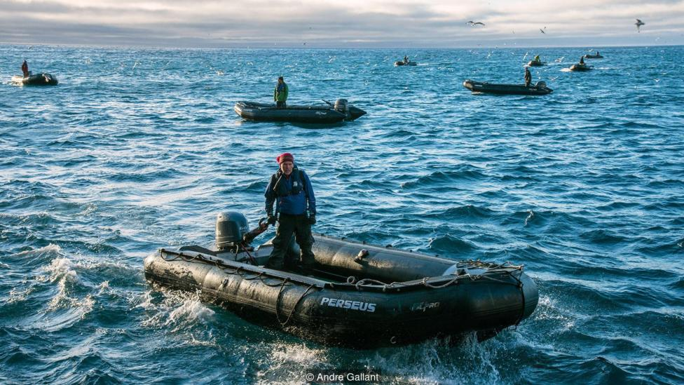

Where 200,000 couples flock each year

Despite being a small speck in the Arctic, Prince Leopold Island is one of Canada’s most important seabird colonies.
I leaned over the railing on the bow of the icebreaker, The Ocean Endeavour, just as the rocky cliff face of Prince Leopold Island emerged from the fog. The tiny island in the Canadian territory of Nunavut had little vegetation and was almost completely surrounded by sheer cliffs. From here, the peaks appeared lifeless and cold.
We were more than 3,200km, from Toronto and yet, our guides assured us, 200,000 couples fly to this island each year.
Birds, that is.
Even though the island is just 65sqkm, it’s the largest seabird colony in the high Arctic and a federally protected migratory bird sanctuary. “Its claim to fame,” said Tony Gaston, a retired research scientist who’s worked on this island since 1975, “is that it’s got all of the major Arctic species. On a fine day, there isn’t anywhere with a more exciting vista of birds and scenery.”
We loaded into a Zodiac – 10 of us in the inflatable boat – and it pitched steeply in the icy water as the ocean swell and arctic wind carried us close to the island’s vertical cliffs. I gripped the sides, hoping that neither my gear nor I would go overboard. As we approached, the cliffs themselves seemed to come alive.
Thick-billed murres, black guillemots, black-legged kittiwakes and northern fulmars are the key species, and they arrive by the thousands in May and June. It was now August, and the bird sanctuary was at full occupancy. Birds were everywhere. In the water. In the air. Crammed onto the tiniest ledges of every cliff face. Adults and chicks of different varieties and at various stages of development, all calling to each other at once.
It was a giant rocky nursery – complete with babies and noise.
Fulmars dived down right beside the Zodiac, splashing us as they tried to snatch a fish or tiny sea butterfly. Some young birds took their first brave launch from the safety of the cliffs and plopped down near us. I wondered if they felt shocked at the frigid temperature of the water. I watched as two male murres, one with a little fledgling swimming alongside, suddenly pecked fiercely at each other, flapping their wings and churning up the water. Then, just as quickly, the father and chick paddled away. Other murres swam as though doing the butterfly stroke, both wings coming out of the water at the same time to propel them forward. The cliffs, air and water were seething with birds.
From the base of the cliffs, the island seemed pristine, untouched. From here, I couldn’t see the hut that sits on the table-top surface of the island. For the past 40 years, researchers have been coming here most summers, arriving by plane and landing on a strip of tundra near the cabin. Here, in this remote place, they study environmental contaminants.
It’s a stark reminder that nowhere is immune to pollution’s effects. The island is thousands of kilometres from the nearest industrial centre, yet toxic substances like mercury find their way here via air and water. Contaminants infuse into the food chain and get increasingly concentrated the further up the web you go; so seabirds that feast on fish are particularly vulnerable.
Birgit Braune, a research scientist with Environment and Climate Change Canada, studies contaminant levels in the birds’ eggs. To get the eggs, you have to collect them from the nests – a tricky manoeuver on the fragmented cliffs of Prince Leopold, where the crumbly sandstone and limestone create countless tiny ledges that are perfect nesting sites.
“1,000ft cliffs aren’t for the faint of heart,” she said. “We hire expert climbers to go down on ropes.”
But descending into the midst of thousands of birds takes tact too. “The climbers take their time,” she said, “and move very slowly and carefully so that no rocks get dislodged and fall down into the colony.” They do their best to minimise disruption to the breeding birds. And they take as few eggs as they need to get the information they’re looking for.
The value of doing research in the same place for decades is that you’re able to see trends over time. Braune explained that mercury levels rose in the birds from 1975 to the mid-2000s. But then they started to level off, coinciding with increased regulations on mercury emissions. “That’s good, but now it’s a question of will it turn to a downward trend?” she said. “That’s what you always hope for.”
Braune’s findings have played an important role in informing international committees regarding contaminant levels. It’s this information that leads to changes in regulations, like the regulations on DDT in the 1970s that resulted in a drop in DDT levels in seabird eggs. “Regulations work,” she said. “There’s no two ways about it.”
Braune stressed how vital the monitoring program is for the Inuit people living in Canada’s north who hunt and fish from these same waters – their breadbasket. “It’s important that this information gets back to the people,” she said, “and gives them an indication of how polluted their grocery store is.”
“And at the end of the day, pollution is an international problem,” she said, “so the solution has to be international.”
It’s not just the birds that are affected; the island is a hub of activity. Arctic foxes and Arctic hares have been seen on the island. Collared lemmings appeared for the first time a couple of years ago, but haven’t made the island a permanent home. Even caribou and wolves have been seen. But it’s hard to beat the sight of a white gyrfalcon skimming the tops of the cliffs, or, when the weather co-operates and the waves aren’t too big, the vision of 200 beluga whales, an occasional bowhead whale or even narwals swimming in the waters below.
The weather on the island makes research here particularly tricky. “It’s predictable, but unfortunately it’s predictably bad!” Gaston said. But there have been noticeable shifts in weather patterns over the years, although it’s hard to tell what that will mean for the island and its winged inhabitants. In the 1970s, bad weather meant fog, but in recent years, they’ve started to see a lot more rain. “It’s really quite striking,” Gaston said, adding, “Have you looked at the recent temperature anomalies in the Arctic - it’s unbelievable!” He was referring to the shockingly warm temperatures reported in much of the Arctic Ocean at the end of 2016 – about 14C above average.
“I’m not going to be around to see the end of the polar bear, the ivory gull and the gyrfalcon,” he said. “But there may be kids alive today who will – it’s all snowballing so fast now.”
Our Zodiac returned to the ship and I scrambled back on board and headed to the stern. The island shrank as we sailed away and the number of birds dwindled until just a few fulmars zipped past the deck. In a few more weeks, the birds will head to their wintering grounds with their next generation in tow. I wondered if I’ll ever get to see this sight again. I’m incredibly fortunate to have seen it once, but I’m craving the view from the top of the island – where only researchers are allowed to go. I want to stand at the edge, looking down at the birds and scanning the waves with the hopes of spotting a beluga.
Subscribe to our newsletter for free